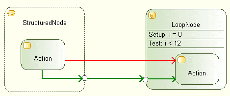

Flows cannot directly cross the boundaries of a Structured Activity Node.
Structured Activity Nodes are:
A Flow cannot enter a Structured Node from outside, other than via an Input Pin. Similarly, a Flow cannot exit a Structured Node, other than via an Output Pin.
The following figure illustrates the different authorized and forbidden cases.

green = correct flows via pins, red = incorrect flow crossing structured node boundaries
Possible solutions to this problem are as follows:
Solution 1
If the faulty Flow is a Control Flow, it is very likely that you should revise your design. Control Flows define a kind of execution sequence and thereforejumping in or out of a Structured Node looks like a “goto” in a programming language.
Solution 2
If the faulty flow is an Object Flow, you can set up Input and Output Pins on the involved Structured Nodes and make your Object Flow cross the nodes
boundaries via these pins.
Remember that you cannot link two pins by a Control Flow.